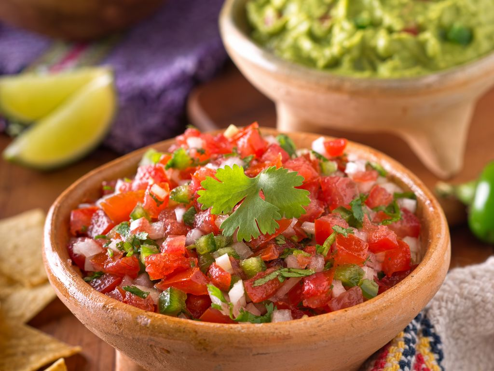

Pico de gallo (salade mexicaine)
Ingrédients:
- Sel
- Huile d'olive
- Coriandre (fraiche)
- Tomates
- Avocats
- Oignon Nouveau
- Citron
Instructions:
- ÉTAPE 1: Coupez les tomates en dés, les avocats également (pas trop murs les avocats il ne faut pas qu'ils se transforment en purée...).
- ÉTAPE 2: Hachez grossièrement la coriandre, il en faut pas mal disons un verre de 20 cl une fois hachée.
- ÉTAPE 3: Coupez finement l'oignon et mélangez tout ça dans un saladier.
- ÉTAPE 4: Assaisonnez directement dans le saladier avec le jus d'un demi-citron, une cuillère à soupe d'huile d'olive et salez à votre convenance.
- ÉTAPE 5: Gardez au frigo pour que le pico de gallo soit bien frais.
- ÉTAPE 6: En été, avec des grillades, c'est tout simplement divin, pour ceux qui aiment la coriandre bien sûr.
- ÉTAPE 7: Pour en faire en plus grande quantité comptez 1 avocat pour deux tomates moyennes.
Temps de préparation: 15 minutes
Difficulté: Facile